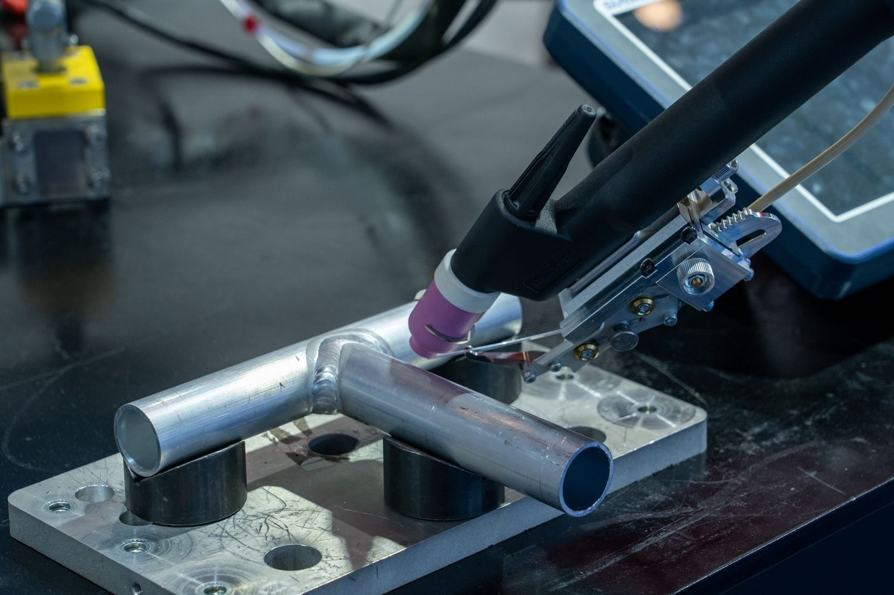
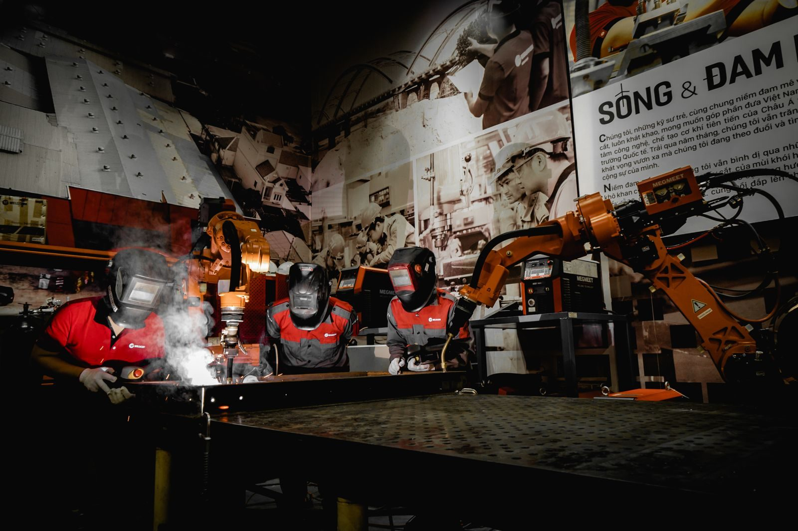
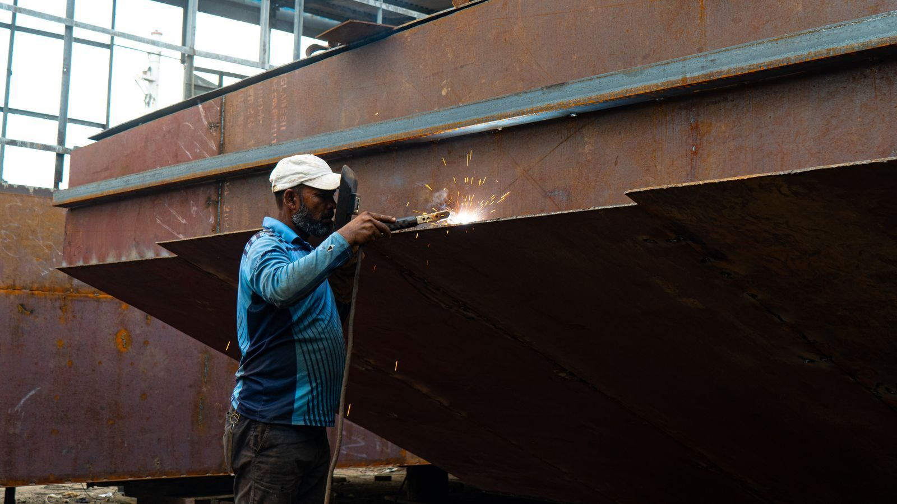

Laser Welding vs CNC Machining for Sheet Metal Assemblies: The Assembly Step That Changes the Finish
The choice between laser welding and CNC machining for a sheet metal assembly is not a strength choice - it is a finish choice. The assembly that is welded is the assembly that carries the weld bead; the assembly that is machined is the assembly that carries the surface finish. The decision is the finish, and the finish is the cost.
What the two processes actually buy you
Laser welding buys you the joint. The joint is made by fusing the metal at the seam, and the joint is ready in minutes. The cost is the machine time, the gas, and the operator's time. The joint is not interchangeable with a machined joint - the weld bead, the residual stress, and the distortion are all different.
CNC machining buys you the surface. The surface is cut from the sheet, and the surface is ready in hours. The cost is the material, the machine time, and the operator's time. The surface is not interchangeable with a welded surface - the surface finish, the dimensional tolerance, and the material behaviour are all different.
The physical difference behind that trade is heat input. A laser delivers a concentrated beam into a narrow keyhole, so the fusion zone and the heat-affected zone beside it stay small - which is why a laser seam can often be left as-welded, with a cosmetic-class surface and little of the spatter that makes arc welds grindable. Machining removes material mechanically, with no thermal cycle at all. The heat that makes the weld is the same heat that moves the steel around it.
Where the decision actually gets made
The decision is made at the assembly stage, not the design stage. An assembly that is welded is an assembly that carries the weld bead into the next process; an assembly that is machined is an assembly that carries the surface finish into the next process. The next process is the one that decides the decision - a surface that is machined and then welded is a surface that is distorted by the weld; a surface that is welded and then machined is a surface that is smoothed by the machine.
So the real question is sequence. If mating faces, mounting datums or cosmetic surfaces must hold tight tolerances, the default is to weld first and machine afterwards, leaving a finishing allowance at the features the weld could move. If the part is fit-and-weld with generous interfaces, machining can come first and the weld carries its own finish. Where both apply, the answer is a two-stage plan: weld the structure, then machine the critical features back to the drawing.
The cost that hides in the choice
The cost that hides in the choice is the distortion. A sheet metal assembly that is welded without the right fixture will distort, and the distortion is the cost that you cannot absorb into the assembly budget without a plan. The fixture is the part of the assembly that keeps the distortion in check, and the fixture is the part of the assembly that is built to the part's tolerance stack.
Distortion is a welding-plus-fixturing-plus-sequence phenomenon, not just a welding one. Thin sheet has little section modulus, so the shrinkage of a cooling seam pulls the surrounding metal with it, and a part clamped in the wrong place shrinks toward the clamp. The mitigation is boring and effective: a fixture that locates the parts in their assembled position, a weld sequence that balances heat input, and clamping that resists the pull without springing the part back.
Laser welding for sheet metal: what it does well
For sheet metal, laser welding earns its place on the seams that matter most: long corner seams on enclosures, flange joints, lap joints and closed profiles where an arc process would need filler wire, more passes and more grinding. The narrow heat-affected zone means less distortion on the same joint, and the seam can often be left with a cosmetic-class finish, which removes the grinding step from the cost sheet. Seam quality depends on gap control and fit-up - laser welding is far less forgiving of an inconsistent joint gap than arc processes - so upstream blanking and press-brake tolerances are part of the weld specification.

The equipment side splits into fixed machines and robotic cells. Fixed configurations - multi-axis machines and dedicated longitudinal seam welders - cover repeatable part families where the part comes to the beam. Robotic cells cover everything else: large enclosures, varied part mixes and joints that need the beam to travel a complex path. Suppliers of TrueSyn's robotic laser welding and cutting automation cover the full span, and they back the choice with free sample welding and process validation - the only honest way to settle a weld question, because seam quality is material-specific, not brochure-specific.
Robotic laser welding cells
A robotic cell adds the positioner, the fixturing and the safety enclosure to the laser source and the robot, and its value is that it moves the beam to the part instead of the part to the beam. For sheet metal assemblies - enclosures, cabinets, ducting, machine guards - that flexibility is usually the difference between one cell covering a product family and three fixed machines covering three products. The TrueSyn laser welding machine range spans the fixed configurations, while the TrueSyn laser welding robot platforms cover the cell side with Yaskawa, FANUC, ABB and in-house series - a spread that matters less for weld quality than for integration with controls your team already knows.

Two planning points decide whether a cell pays. The first is joint access: the robot needs a straight-line approach to every seam, so the part and fixture are designed around reach, not just weld geometry. The second is the positioner, which is half the cell - a two-station positioner lets the operator load one part while the robot welds the other, turning weld time into cycle time. Sample welding and process validation de-risk both points on your part.
CNC machining in the assembly
Machining is what puts precision back into a welded assembly. The seams that hold an enclosure together do not have to hold its mounting bores, its mating face or its seal groove - those features are machined after welding, from datums established on the welded structure. The rule of thumb: anything the weld heat can move gets machined after the weld, and anything that has to be flat, square and true gets machined last.
That sequence needs an allowance. The stock left at the post-weld features has to absorb both the weld distortion and the finishing cut, so the blank or formed part is left deliberately oversize at those locations. The allowance is a drawing decision, not a shop decision - if the part is modelled at final dimension everywhere, the machinist has nothing to work with after welding. The same logic runs in reverse for parts machined first and welded second: machined mating faces, plated surfaces and cosmetic panels should not see the weld heat, which usually means designing the joint so the weld lands on a sacrificial flange or a hidden internal feature.
Joint design, fixturing and distortion control
The route decision comes down to what the joint has to do and what finish it has to carry. The table below is the shortlist most fabricators converge on after a few programmes.
| Assembly scenario | Recommended route | Why |
|---|---|---|
| Corner seams on a painted enclosure, no tight mating faces | Weld only, laser seam left as-welded or lightly dressed | Low heat input keeps distortion within the paint prep tolerance; no machining needed |
| Enclosure with machined mounting bosses or a seal groove | Weld first, then machine the critical features from welded datums | Weld heat moves thin sheet; machining restores the features that carry the interface |
| Cosmetic panel with a hidden structural flange | Machine the panel first, weld on the hidden flange | Keeps the visible surface out of the heat-affected zone entirely |
| High-volume repeat seam on one part family | Fixed multi-axis or longitudinal seam laser machine | Part comes to the beam; cycle time and consistency beat flexibility |
| Mixed product family, large or varied parts | Robotic cell with a two-station positioner | Beam comes to the part; loading overlaps welding so cycle time survives the variety |
Across all of these, the fixture is the silent partner. It locates the blanks in their assembled geometry, resists the weld shrinkage without over-constraining, and repeats - a fixture that has to be re-shimmed every batch is a distortion source with extra steps.
Quality and verification
Weld quality on a sheet metal assembly is governed by the welding quality requirements of ISO 3834, the framework a competent fabricator works to for fusion-welded metallic products. Verification runs at three levels: before the run, on the first article, and during production.
Before the run, the joint is validated by sample welds on production-representative material and fit-up. On the first article, the seams are inspected visually and, where the joint is critical or hidden, by dye penetrant testing; the machined features are verified dimensionally after welding, which is where distortion shows up if it is going to. During production, the controls are the ones that keep the first article repeatable: fit-up checks at press-brake and blanking, fixture condition, and periodic seam checks.
For the buyer, the evidence list is short: the sample weld results, the first-article dimensional report taken after welding, and the weld procedure behind both.
Process infrastructure and safety
Laser welding brings infrastructure that has to be planned, not discovered. A Class 4 laser beam - the class used by welding sources - is hazardous by direct exposure and by reflection, which in any shared workshop means a guarded cell with interlocks and controlled access, following the laser safety framework of IEC 60825-1. Fume extraction at the seam is not optional, and the fiber laser source depends on a cooling loop, so chiller maintenance is a planned item rather than a breakdown response.

None of this is a reason to avoid laser welding; it is a reason to budget for it. The shops that run laser cells well treat the enclosure, the extraction and the chiller as part of the cell, which is also why the enclosure decides where the cell can sit and how it can be serviced.
Common mistakes
The first mistake is welding after final machining, which spends the distortion budget on features that were already finished. The second is designing a joint the robot cannot reach, so the cell needs a fixture redesign before the first production part. The third is assuming laser welding tolerates any gap the press-brake produces; fit-up is part of the weld specification, and an uncontrolled gap shows up as lack of fusion or burn-through. The fourth is under-budgeting the infrastructure - no extraction, no interlocked enclosure, no chiller plan - which turns a productive cell into an idle one. And the fifth is skipping sample welding: a demo coupon proves nothing about your alloy and your joint.
Conclusion
The decision is the finish, and the finish is the cost. Weld the joints that carry the structure, machine the features that carry the interface, and sequence the two so the weld heat never lands on a finished surface. Leave a machining allowance at the post-weld features, design the fixture as carefully as the part, and verify the plan on a sample weld before the first production run - let the sample, not the brochure, settle the argument.
Frequently asked
When should I choose laser welding over CNC machining for a sheet metal assembly?
When the assembly is the final part and the weld has to carry the load. When the assembly is the test part and the surface finish has to hold the tolerance, choose CNC machining - the surface is cheaper to hold on the machined part than on the welded one.
What is the distortion difference between the two?
A welded assembly will distort at the weld seam; a machined assembly will not distort at all. The distortion is the cost that you cannot absorb into the assembly budget without a fixture, and the fixture is the part of the assembly that keeps the distortion in check. Laser welding's narrow heat-affected zone distorts less than arc processes, but it does not eliminate the effect - sequence, fixturing and allowance still decide the outcome.
How do I know which process my assembly needs?
Match the assembly's tolerance stack to the process. An assembly that is specified to a tolerance that welding can hold but machining cannot is an assembly that is welded; an assembly that is specified to a tolerance that machining can hold but welding cannot is an assembly that is machined. The process manufacturer will publish the tolerance figures for the assembly it is built for. Where both apply, the answer is usually weld first, machine second.
Can a laser seam be left without grinding?
Often, yes - that is one of laser welding's main selling points on sheet metal. The narrow, concentrated seam frequently lands in a cosmetic class that needs no grinding, removing a whole finishing step from the cost sheet. It is not automatic: seam class depends on fit-up, material and parameters, which is exactly what a sample weld proves. Where the seam must meet a defined quality level, verify it against ISO 3834 rather than by eye.
What does a laser welding cell need around it?
A guarded enclosure with interlocks for the Class 4 beam, fume extraction at the seam, and a cooling loop for the laser source - plus the fixture and the positioner, which are part of the cell rather than accessories. A beam without the enclosure, extraction and cooling is not a production-ready cell, and the enclosure also decides where the cell can sit and how it can be serviced.